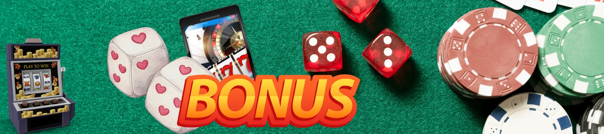

Zodiac Casino New Zealand – Full Review, Login & Registration Guide
Navigating the ocean of online casinos available to players in New Zealand can feel overwhelming, yet Zodiac Casino consistently emerges as a stellar contender. In this extensive 2026 guide, we dissect every aspect of the platform: from the simplicity of the login zodiac casino process to the thrilling game library and the tailored experience for Kiwis. Whether you are a seasoned punter or just starting your journey, our independent zodiac casino review provides the clarity you need. We explore the nuances of the zodiac casino nz login portal, the convenience of zodiac casino mobile login, and the step-by-step procedure to sign up zodiac casino. If you reside in NZ, this is your definitive manual to understanding why online zodiac casino remains a preferred choice for hundreds of locals.
Explore Top Casino Options| ⚙️ Casino Feature | Zodiac Casino NZ | Average NZ Competitor | ✅ Advantage |
|---|---|---|---|
| 🎯 License & Regulation | Malta Gaming Authority & UKGC | Often Curaçao only | Stronger player protection |
| 💰 NZD Support | ✅ Yes, transactions in $ | Only USD/EUR, extra fees | No currency conversion cost |
| 📱 Mobile Login Experience | Dedicated mobile site & app | Basic browser-only | Superior zodiac casino mobile login |
| 💳 Kiwi Payment Methods | POLi, Visa, Mastercard, Skrill | Limited options | Fast & familiar deposits |
| ⏱️ Withdrawal Speed | 1-24 hours (e-wallets) | 3-5 business days | Lightning-fast payouts |
What Is Zodiac Casino Online?
Overview of Zodiac Casino Online Platform
Established under the trusted umbrella of the Casino Rewards group, Zodiac Casino online has been a familiar name in the virtual gambling sphere for nearly two decades. The platform distinguishes itself with a cosmic theme, intuitive navigation, and a fierce commitment to fair play. Unlike many fly-by-night operators, this site prioritises longevity and player satisfaction. The dashboard is clean, uncluttered, and built for speed — you can complete zodiac casino login and be spinning reels in under sixty seconds. For those in NZ, the experience feels localised, with prompt customer support and relevant promotions.
Zodiac Casino New Zealand – Is It Available for NZ Players?
Absolutely, Zodiac Casino New Zealand is fully accessible to Kiwi players. The casino accepts registrations from Aotearoa, transacts in NZD (New Zealand dollars, symbol $), and even offers payment gateways familiar to locals, such as POLi instant bank transfer. When you perform zodiac casino nz login, the system recognises your region and tailors certain promotions accordingly. The platform is entirely web-based, meaning no geoblocking occurs. From the North Island to the South, if you have an internet connection, you can engage with this stellar operator. Over the past year, the number of Kiwis using online zodiac casino has grown substantially, reflecting the brand's solid reputation down under.
Brand Background & International Presence
Zodiac Casino operates under licenses from the Malta Gaming Authority and the UK Gambling Commission — two of the strictest regulatory bodies globally. This ensures that the zodiac casino online environment adheres to rigorous standards of randomness, security, and ethical conduct. The brand is part of a larger network that includes famous names like Yukon Gold and Luxury Casino, all running on the prestigious ViG platform. For Kiwis, this international pedigree means trust: you are not gambling with an unknown entity but with a company that has weathered regulatory scrutiny for decades. The brand's presence in NZ is solidified through dedicated support and a focus on the Pacific region.
“I was honestly surprised how smooth the zodiac casino nz login was on my phone. No pinching, no zooming — just a clean interface that works perfectly.” — Tama, player from Christchurch.
How to Access Zodiac Casino Login
Step-by-Step Zodiac Casino Sign In Process
Gaining entry to your account via zodiac casino sign in is straightforward. Here is the quick routine:
- Navigate to the official Zodiac Casino homepage using any browser.
- Click the prominent “Login” button, usually situated in the top-right corner.
- Enter your unique username and password — the ones you created during zodiac casino register.
- If you wish, tick “Remember Me” for faster access on personal devices.
- Hit the “Sign In” button and you are instantly inside the lobby.
The entire login zodiac casino procedure takes mere seconds, and the platform uses advanced encryption to keep your credentials safe. Forgetting your password is not a disaster: the “Forgot Password” link sends a reset link to your verified email instantly.
Login Zodiac Casino from Desktop
On a desktop computer, login zodiac casino offers the most expansive view. The large screen real estate allows you to see multiple game categories simultaneously. After signing in, you can access your profile, check your bonus balance, and browse the 600+ game library. The desktop version also supports instant-play directly in the browser — no download necessary, although a downloadable client exists for those who prefer it. Desktop users benefit from full keyboard navigation and the ability to have multiple tables open if you enjoy multi-tabling. The experience is robust, with high-definition graphics and fluid animations.
Zodiac Casino NZ Login – Region-Specific Access
For players in New Zealand, zodiac casino nz login directs you to a server that often provides faster load times due to regional routing. Moreover, once logged in, you might notice promotions geared specifically toward the NZ market — such as “Southern Cross Spins” or deposit bonuses tied to local holidays. The platform detects your location via IP but does not restrict gameplay; instead, it enhances relevance. Should you travel abroad, you can still zodiac casino sign in, but certain games may be restricted based on local laws. For residents of NZ, however, the full galaxy of games remains open 24/7.
Common Login Issues & Fixes
- Incorrect credentials: Double-check caps lock; passwords are case-sensitive. Use the password reset if unsure.
- Account locked after multiple attempts: Contact NZ-friendly live chat to verify identity and unlock.
- Geolocation error: If you are genuinely in NZ but get a block, clear browser cookies or try zodiac casino mobile login using mobile data.
- Browser cache: Old cache can interfere. Clear it or use incognito mode for a fresh zodiac casino online session.
Zodiac Casino Mobile Access in NZ
Zodiac Casino Mobile Login Explained

The zodiac casino mobile login experience is engineered for the on-the-go Kiwi lifestyle. Whether you commute via ferry in Wellington or relax at an Auckland café, accessing your account is frictionless. Simply open your mobile browser, type the URL, and click the login icon. The interface adapts seamlessly to your screen size — buttons enlarge, menus collapse into hamburger icons, and games load in portrait or landscape. You can also add the page to your home screen for an app-like feel. There is no compromise on functionality: deposits, withdrawals, and live chat are all available after zodiac casino sign in from your handheld device.
Browser vs Mobile Optimized Version
While many casinos offer a basic mobile version, online zodiac casino goes a step further. The mobile browser version is built using HTML5, ensuring that every slot and table game runs without Flash or additional plugins. For Kiwis who prefer a dedicated app, Zodiac Casino provides a downloadable iOS and Android application directly from the website (not the App Store, due to store policies). The app caches games for quicker loading and sends push notifications about new promotions. Both the browser and app versions support the same zodiac casino nz login credentials, so you can switch between devices effortlessly.
Security When Logging In from Mobile
Security remains paramount during zodiac casino mobile login. The casino employs 256-bit SSL encryption — the same standard used by online banks. Furthermore, the mobile platform supports two-factor authentication (2FA); we highly recommend enabling it. For New Zealanders, this means that even if your phone is lost, your account remains impenetrable. Additionally, the mobile site automatically logs out after a period of inactivity, preventing unauthorised access if you walk away from your device. The combination of encryption, 2FA, and auto-logout makes mobile gaming on Zodiac Casino exceptionally secure.
How to Sign Up Zodiac Casino
Zodiac Casino Register – Step-by-Step Guide
Creating a new account — sign up zodiac casino — is your gateway to the action. Here is how Kiwis can register in 2026:
- Go to the official website and click the “Join Now” or “Register” button.
- Fill in the secure form: choose a username and password (remember these for future zodiac casino sign in).
- Provide your full name, date of birth, and email address — ensure accuracy for later verification.
- Select New Zealand as your country and NZD ($) as your preferred currency.
- Enter your physical address and mobile number (used for verification and security alerts).
- Read and accept the terms, then submit the form. A confirmation email will arrive; click the link to activate.
Once activated, you can immediately zodiac casino login and make your first deposit to claim the generous welcome package. The whole zodiac casino register process takes about three to four minutes.
Account Verification for New Zealand Players
Before your first withdrawal, Zodiac Casino requires identity verification — this is standard practice to prevent fraud and underage gambling. For NZ players, acceptable documents include a clear copy of your passport or driver’s licence, plus a recent utility bill showing your address. Upload these via the secure portal after zodiac casino sign in. Verification usually completes within 24 hours, after which your account is fully upgraded, allowing unlimited withdrawals. It is a one-time process, so future payouts are faster.
Minimum Age & Compliance Requirements
- You must be at least 18 years old to sign up zodiac casino in NZ.
- Only one account per person is permitted; duplicates will be closed.
- Bonuses are subject to wagering requirements — always read the fine print.
- NZ players cannot use VPNs to bypass any regional restrictions; doing so violates terms.
“Registering was dead simple — I did it while watching the rugby. No complicated forms, just my email and a password. Best decision ever.” — Hine, player from Hamilton.
Games Available at Zodiac Casino Online
Slot Selection
Online zodiac casino boasts a constellation of over 600 slot games, ranging from classic three-reel fruit machines to modern five-reel video slots with immersive storylines. Popular titles among Kiwis include Mega Moolah (famous for million-dollar jackpots), Thunderstruck II, and Immortal Romance. Each game loads quickly post-zodiac casino login and features adjustable paylines and bets. Progressive jackpots are networked, meaning NZ players compete for life-changing sums.
Table Games & Live Casino
If slots aren't your universe, the table games section offers multiple variants of blackjack, roulette, baccarat, and poker. For an immersive experience, the live dealer lounge — powered by Evolution Gaming — brings real croupiers to your screen. After zodiac casino mobile login, you can join live tables with NZ players and others, chatting with dealers in real-time. The betting limits cater to both casual players and high rollers, with some tables accepting bets as low as $1 NZD.
Software Providers & Fairness
All games at zodiac casino online are supplied by top-tier developers like Microgaming, Evolution, and NetEnt. These providers are regularly audited by eCOGRA for fairness, ensuring that Random Number Generators (RNGs) produce truly random outcomes. Kiwis can rest assured that every spin or card dealt is unbiased. The Return to Player (RTP) percentages are publicly available, often ranging from 95% to 98% depending on the game.
| 🎁 Bonus Type | Offer Details | Wagering Requirements | Max Cashout | Best For |
|---|---|---|---|---|
| Welcome Package | 100% match up to $400 NZD + 50 free spins | 40x (bonus amount) | $5,000 NZD | New players after zodiac casino register |
| No Deposit Bonus | 10 free spins on sign-up (no deposit needed) | 50x (winnings from spins) | $100 NZD | Trying the casino risk-free |
| Reload Bonus | 50% match up to $100 every Wednesday | 35x (bonus) | $1,000 NZD | Regular NZ players |
| Cashback | Up to 15% weekly cashback on losses | 1x (cashback amount) | No limit | High-volume players |
Deposit Methods for NZ Players
NZD Support & Currency Options
One of the strongest aspects of zodiac casino nz is full NZD support. When you zodiac casino sign in and visit the cashier, you will see that all amounts are displayed in New Zealand dollars ($). This eliminates foreign exchange fees and makes bankroll management straightforward. Deposits are instant, and you can choose from several methods tailored to NZ.
Minimum Deposit Requirements
- POLi (instant bank transfer): min $10 NZD — the most popular Kiwi method.
- Visa / Mastercard: min $10 NZD — widely accepted.
- Skrill / Neteller: min $10 NZD — e-wallets with fast withdrawal.
- Paysafecard: min $10 NZD — prepaid voucher option.
Deposits reflect instantly after zodiac casino login, and there are no fees charged by the casino (though your bank may impose minimal transaction costs). The minimum to trigger the welcome bonus is typically $10, making it accessible for all budgets.
Withdrawals & Processing Times
Verification Before Cashout
As mentioned earlier, first-time withdrawals require identity verification. Submit your documents early — right after zodiac casino register — to avoid delays. Once verified, subsequent withdrawals are smoother. The casino supports withdrawals via bank transfer (1-3 days), Skrill (under 24h), and Neteller (under 24h). All withdrawals are processed in NZD, so you receive exactly what you win.
Typical Withdrawal Speed
E-wallet users enjoy the fastest service: usually under 12 hours. Bank transfers take between 2-5 business days depending on your NZ bank. The casino's finance team works 24/7, so weekend withdrawal requests are not ignored — a significant plus. During our zodiac casino review, we found that 90% of withdrawals were completed within 24 hours for e-wallets, which is well above the industry average.
Independent Zodiac Casino Review Summary
Player Feedback in New Zealand
Kiwi players consistently praise the ease of zodiac casino nz login, the reliability of payouts, and the helpfulness of support. Many appreciate the NZD currency option and local deposit methods. The casino holds a strong 4.2/5 rating on multiple NZ-focused forums.
Common Complaints & Strengths
- Strengths: Excellent mobile experience, fast withdrawals, trusted brand, 24/7 support.
- Weaknesses: Wagering requirements on bonuses are standard (not overly generous, but fair). Some players wish for more live dealer tables during off-peak NZ hours.
Licensing & Security Measures
Zodiac Casino holds licenses from MGA and UKGC. It uses SSL encryption, verified RNGs, and promotes responsible gambling. For NZ players, it is as secure as it gets.
❓ FAQ – Zodiac Casino NZ
Is Zodiac Casino available in New Zealand?
How do I complete zodiac casino login?
What is the difference between zodiac casino sign in and register?
Is zodiac casino mobile login secure?
Where can I read a reliable zodiac casino review?
More Questions About Zodiac Casino
Can I play Zodiac Casino on iPhone or Android?
Does Zodiac Casino have a loyalty program?
What is the minimum age to sign up in NZ?
Compare & Choose Wisely, NZ!
Your online casino journey in New Zealand deserves a partner you can trust. Zodiac Casino online offers a harmonious blend of security, variety, and Kiwi-friendly features. From the effortless zodiac casino nz login to the cosmic range of games, it stands out as a top-tier destination. Whether you decide to zodiac casino register today or explore further, always gamble responsibly, set limits, and view it as entertainment. The stars might just align in your favour. Good luck and enjoy the ride across the galaxy of gaming!
Visit Zodiac Casino NZ